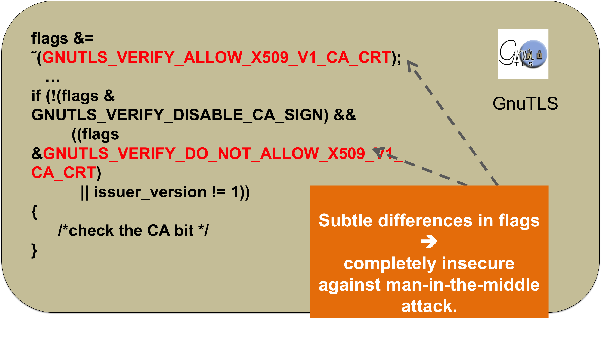

Research Projects
Thanks to the large number of diverse open source projects available in software forges such as GitHub, it becomes possible to evaluate some long-standing questions about software engineering practices. Each of these project repositories hosts source code along with entire evolution history, description, mailing lists, bug database, etc. I implemented a number of code analysis and text analysis tools to gather different metrics from GitHub project repositories. Then applying a series of advanced data analysis methods from machine learning, random networks, visualization, and regression analysis techniques, I shed some light on how to improve software quality and developers’ productivity.
- Effect of programming languages on software quality. To investigate whether a programming language is the right tool for the job, we gathered a very large data set from GitHub (728 projects, 63M lines of code, 29K authors, 1.5M commits, in 17 languages). Using a mixed-methods approach, combining multiple regression modeling with visualization and text analytics, we studied the effect of language features such as static v.s. dynamic typing, strong v.s. weak typing on software quality. By triangulating findings from different methods, and controlling for confounding effects such as code size, project age, and contributors, we observed that a language design choice does have a significant, but modest effect on software quality (see our FSE'14 paper).
- API stability and adoption in the Android Ecosystem. In today’s software ecosystem, which is primarily governed by web, cloud, and mobile technologies, APIs perform a key role to connect disparate software. Big players like Google, FaceBook, Microsoft aggressively publish new APIs to accommodate new feature requests, bugs fixes, and performance improvements. We investigated how such fast paced API evolution affects the overall software ecosystem? Our study on Android API evolution showed that the developers are hesitant to adopt fast evolving, unstable APIs. For instance, while Android updates 115 APIs per month on average, clients adopt the new APIs rather slowly, with a median lagging period of 16 months. Furthermore, client code with new APIs is typically more defect prone than the ones without API adaptation. To the best of my knowledge, this is the first work studying API adoption in a large software ecosystem, and the study suggests how to promote API adoption and how to facilitate growth of the overall ecosystems (see our ICSM'13 paper).
- Assert Use in GitHub Projects. Assertions in a program are believed to improve software quality. We conducted a large scale study on how developers typically use assertions in C and C++ code and showed that they play positive role in improving code quality. We further characterized assertion usage along different process and product metrics. Such detailed characterization of assertions will help to predict relevant locations of useful assertions and eventually will improve code quality (see our ICSE'15 paper).
|
To maintain different variants of the same projects, developers often port similar
features or bug-fixes from one system to another. This requires lot of repeated
work, which is often tedious and error-prone. To automatically identify the
repeated work, we designed Repertoire, an source code change analysis tool that
compares the edit contents and the corresponding operations of program patches to
identify similar changes. Repertoire identifies repetitive changes with 94%
precision and 84% recall (see our FSE'12
tool-demo paper).
|
Patch1 |
Patch2
|
|
| These results confirmed that the overhead of repetitive changes is non-trivial and
suggests that automated tools would be helpful to facilitate the process.
Check out the code @ https://github.com/baishakhir/RepertoireTool |
Identifying Repetitive Changes | ||
|---|---|---|---|
|
To implement repetitive changes, developers usually copy code from an existing
implementation and then paste and adapt it to fit the new context. An incorrect adaptation
often leads to a copy-paste error. Such errors are quite common in practice—in the last 3
years 182 copy-paste errors were reported in Linux.
|

|
|
Nowadays in open software market, multiple software are available to users that
provide similar functionality. For example, there exists a pool of popular SSL/TLS
libraries (e.g., OpenSSL, GnuTLS, NSS, CyaSSL, GnuTLS, PolarSSL, MatrixSSL, etc.) for
securing network connections from man-in-the-middle attacks. Certificate validation is a
crucial part of SSL/TLS connection setup. Though implemented differently, the certificate
validation logic of these different libraries should serve the same purpose, following
the SSL/TLS protocol, i.e. for a given certificate, all of the libraries should either
accept or reject it.
|
 |